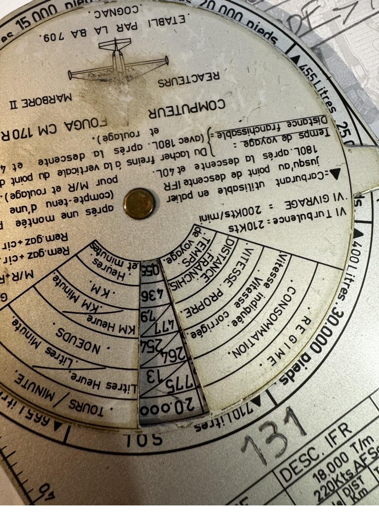
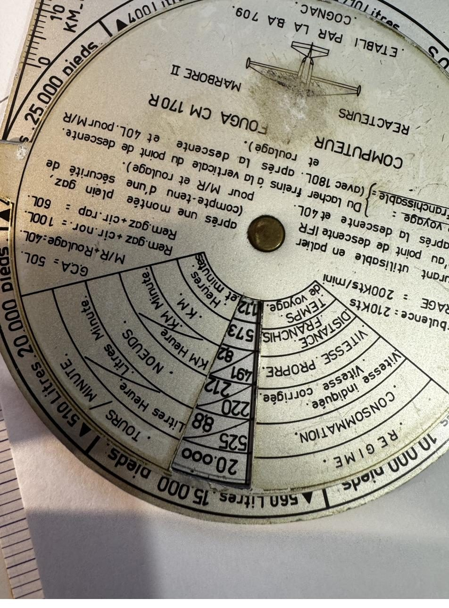
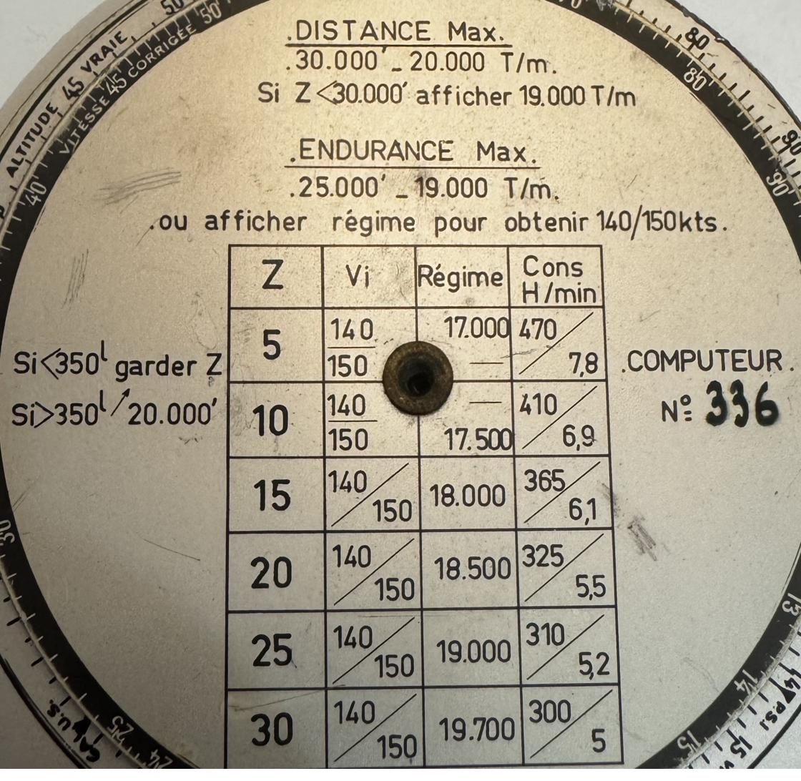
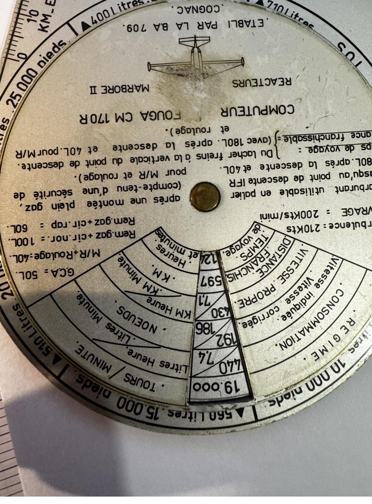
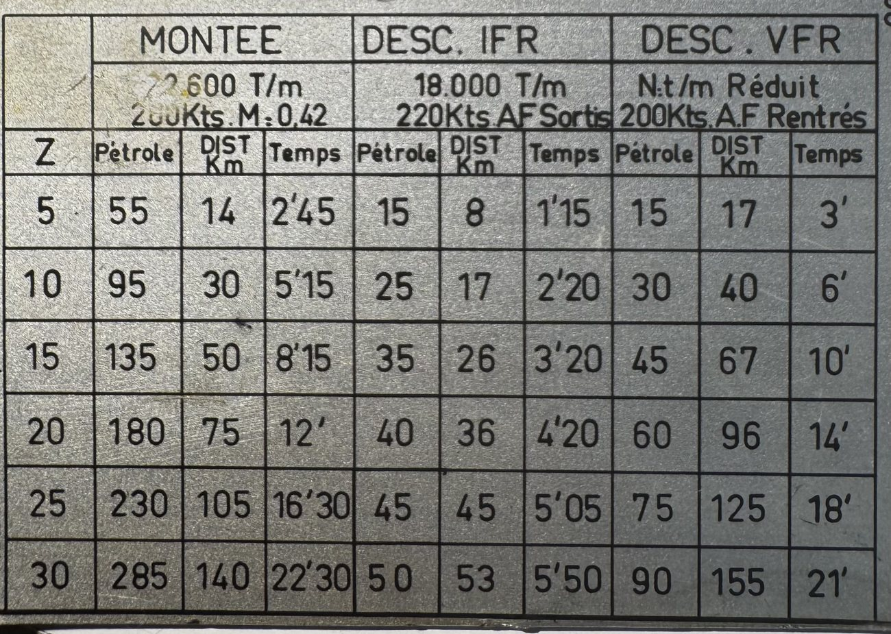
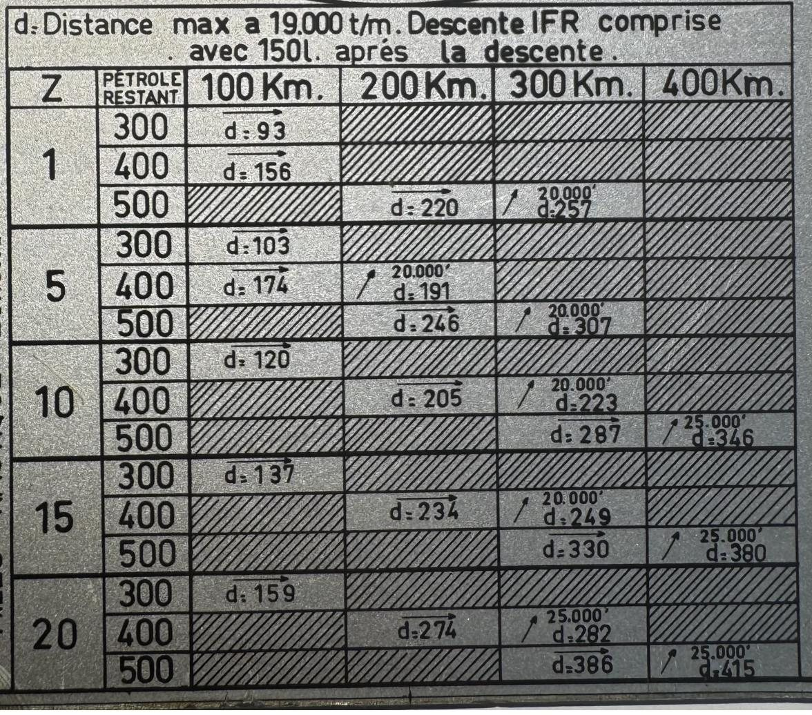

Le mode d’emploi illustré de l’instrument de navigation recto-verso à réacteurs Turboméca Marboré II.
Le computeur du Fouga CM 170 R « Magister » est un instrument de planification recto-verso. Il réunit, sur ses deux faces, trois outils complémentaires propres à l’avion et à son moteur Marboré II.
Régime moteur, consommation, vitesses, distance franchissable et temps — lus directement, sans calcul.
De la famille des « computers » E6B / CRP-5 : conversions d’unités et passage de la vitesse corrigée à la vitesse vraie.
Graduée en kilomètres et en milles nautiques au 1/1.000.000ᵉ pour mesurer les distances sur la carte.
On choisit la face selon ce que l’on cherche : lire une performance de croisière, ou afficher un régime et convertir des unités.
Le disque tournant révèle, dans ses fenêtres de lecture, la série couplée régime → consommation → vitesses → distance → temps pour le calage choisi. Tout autour, la couronne associe chaque altitude à un carburant.
Cette face porte aussi la légende des hypothèses de calcul, les constantes et limitations, et la réglette kilométrique au 1/1.000.000ᵉ.

Cette face porte la table centrale régime / consommation, les règles d’affichage (distance et endurance maximales) et la règle à calcul circulaire (échelles « corrigées » et « vraies », échelle logarithmique, conversion milles).
Les rappels gravés guident le choix du régime selon l’objectif et le carburant restant.

Un repère ▲ associe chaque altitude à une quantité de carburant restant après montée, par paliers réguliers de 50 à 55 L tous les 5.000 pieds. Le repère SOL (710 L, pleins) marque le point de départ au niveau du sol.

Pour chaque régime moteur et chaque altitude, l’instrument donne directement les performances de l’avion.
À régime constant, monter en altitude réduit la consommation et la vitesse indiquée mais conserve la vitesse vraie : d’où un meilleur rendement kilométrique en altitude.
| Altitude / litres | Conso. l/h | Conso. l/min | IAS kt | CAS kt | TAS km/h | km/min | Dist. km | Temps |
|---|---|---|---|---|---|---|---|---|
| 30.000 (400 L) | — | — | — | — | — | — | — | — |
| 25.000 (455 L) | 310 | 5,2 | 160 | 153 | 416 | 7,0 | 710 | 1 h 44 |
| 20.000 (510 L) | 375 | 6,3 | 176 | 170 | 428 | 7,1 | 655 | 1 h 33 |
| 15.000 (560 L) | 440 | 7,4 | 192 | 186 | 430 | 7,1 | 597 | 1 h 24 |
| 10.000 (610 L) | 510 | 8,5 | 209 | 202 | 430 | 7,1 | 545 | 1 h 17 |
| 5.000 (665 L) | 600 | 10,0 | 222 | 215 | 426 | 7,1 | 486 | 1 h 09 |
| SOL (710 L — pleins) | 670 | 11,2 | 233 | 225 | 422 | 7,0 | 446 | 1 h 04 |
Au régime 19.000 t/m, c’est le cas « 30.000′ » qui n’est pas gravé sur l’instrument (fenêtre vierge) : au-dessus de 30.000′, on affiche 20.000 t/m.
| Altitude / litres | Conso. l/h | Conso. l/min | IAS kt | CAS kt | TAS km/h | km/min | Dist. km | Temps |
|---|---|---|---|---|---|---|---|---|
| 30.000 (400 L) | 320 | 5,4 | 172 | 162 | 482 | 8,0 | 740 | 1 h 37 |
| 25.000 (455 L) | 380 | 6,4 | 190 | 182 | 495 | 8,2 | 696 | 1 h 28 |
| 20.000 (510 L) | 450 | 7,5 | 205 | 197 | 492 | 8,2 | 631 | 1 h 20 |
| 15.000 (560 L) | 525 | 8,8 | 220 | 212 | 491 | 8,2 | 573 | 1 h 12 |
| 10.000 (610 L) | 600 | 10,0 | 235 | 227 | 486 | 8,1 | 523 | 1 h 06 |
| 5.000 (665 L) | 695 | 11,6 | 260 | 242 | 482 | 8,0 | 474 | 1 h 00 |
| SOL (710 L — pleins) | 775 | 13,0 | 264 | 254 | 477 | 7,9 | 436 | 0 h 55 |
| Altitude / litres | Conso. l/h | Conso. l/min | IAS kt | CAS kt | TAS km/h | km/min | Dist. km | Temps |
|---|---|---|---|---|---|---|---|---|
| 30.000 (400 L) | 390 | 6,5 | 190 | 183 | 546 | 9,1 | 698 | 1 h 24 |
| 25.000 (455 L) | 465 | 7,8 | 212 | 203 | 550 | 9,2 | 642 | 1 h 15 |
| 20.000 (510 L) | 550 | 9,2 | 229 | 220 | 552 | 9,2 | 586 | 1 h 07 |
| 15.000 (560 L) | 640 | 10,7 | 249 | 238 | 550 | 9,1 | 530 | 1 h 01 |
| 10.000 (610 L) | 740 | 12,4 | 266 | 255 | 547 | 9,1 | 480 | 0 h 53 |
| 5.000 (665 L) | 850 | 14,2 | 282 | 272 | 542 | 9,0 | 437 | 0 h 48 |
| SOL (710 L — pleins) | 960 | 16,0 | 298 | 286 | 538 | 8,9 | 396 | 0 h 45 |
Ces abaques servent à retrancher de la croisière le carburant, la distance et le temps des phases verticales. Montée plein gaz (22.600 t/m, 200 kt, M.0,42) ; descente IFR aérofreins sortis (18.000 t/m, 220 kt) ; descente VFR à régime réduit, aérofreins rentrés (200 kt).

| Z | Montée · 22.600 T/m | Desc. IFR · 18.000 T/m | Desc. VFR · N. réduit | ||||||
|---|---|---|---|---|---|---|---|---|---|
| Pétr. | Dist. | Temps | Pétr. | Dist. | Temps | Pétr. | Dist. | Temps | |
| 5 | 55 | 14 | 2′45 | 15 | 8 | 1′15 | 15 | 17 | 3′ |
| 10 | 95 | 30 | 5′15 | 25 | 17 | 2′20 | 30 | 40 | 6′ |
| 15 | 135 | 50 | 8′15 | 35 | 26 | 3′20 | 45 | 67 | 10′ |
| 20 | 180 | 75 | 12′ | 40 | 36 | 4′20 | 60 | 96 | 14′ |
| 25 | 230 | 105 | 16′30 | 45 | 45 | 5′05 | 75 | 125 | 18′ |
| 30 | 285 | 140 | 22′30 | 50 | 53 | 5′50 | 90 | 155 | 21′ |
Pour chaque altitude Z et les deux vitesses indiquées de référence (140 et 150 kt), la face « 336 » donne le régime à afficher et la consommation horaire puis par minute.
Rappels du cadran : distance maximale — 20.000 t/m à 30.000′, ou 19.000 t/m si Z < 30.000′ ; endurance maximale — 19.000 t/m à 25.000′, ou le régime donnant 140/150 kt ; si carburant < 350 L garder Z, si > 350 L afficher 20.000′.
| Z | Vi (kt) | Régime (T/m) | Cons. l/h | Cons. l/min |
|---|---|---|---|---|
| 5 | 140 – 150 | 17.000 | 470 | 7,8 |
| 10 | 140 – 150 | 17.500 | 410 | 6,9 |
| 15 | 140 – 150 | 18.000 | 365 | 6,1 |
| 20 | 140 – 150 | 18.500 | 325 | 5,5 |
| 25 | 140 – 150 | 19.000 | 310 | 5,2 |
| 30 | 140 – 150 | 19.700 | 300 | 5,0 |
Descente IFR comprise (150 L conservés après la descente), cette table donne la distance franchissable « d » selon l’altitude Z et le carburant restant, pour des étapes de 100 à 400 km. Le symbole → indique un vol en palier ; ↗ une montée au niveau indiqué. Les cases hachurées sont sans objet.

| Z | Pétrole restant | 100 km | 200 km | 300 km | 400 km |
|---|---|---|---|---|---|
| 1 | 300 | d : 93 → | |||
| 400 | d : 156 → | ||||
| 500 | d : 220 → | ↗ 20.000′ d : 257 | |||
| 5 | 300 | d : 103 → | |||
| 400 | d : 174 → | ↗ 20.000′ d : 191 | |||
| 500 | d : 246 → | ↗ 20.000′ d : 307 | |||
| 10 | 300 | d : 120 → | |||
| 400 | d : 205 → | ↗ 20.000′ d : 223 | |||
| 500 | d : 287 → | ↗ 25.000′ d : 346 | |||
| 15 | 300 | d : 137 → | |||
| 400 | d : 234 → | ↗ 20.000′ d : 249 | |||
| 500 | d : 330 → | ↗ 25.000′ d : 380 | |||
| 20 | 300 | d : 159 → | |||
| 400 | d : 274 → | ↗ 25.000′ d : 282 | |||
| 500 | d : 386 → | ↗ 25.000′ d : 415 |
De l’objectif de mission au bilan carburant complet : la marche à suivre avec le computeur.
Selon que l’on vise la distance ou l’endurance :
Choisir le tableau du régime, descendre à l’altitude prévue, puis lire la ligne : consommation, IAS / CAS, TAS, distance franchissable et temps.
Lire dans l’abaque Montée / Descente la ligne de l’altitude de croisière et additionner montée + descente pour établir le profil vertical (carburant, distance, temps).
Au régime 19.000 t/m, elle donne directement la distance « d » franchissable selon l’altitude et le carburant restant, descente IFR comprise. Une flèche ↗ indique le niveau à rejoindre ; → un vol en palier.
Objectif → régime → altitude et relevé de la grille → bilan carburant (pleins − réserves − montée − descente) → distance et temps réels → mesure sur la carte à la réglette (1/1.000.000ᵉ) → vérification des limitations.
Constantes de carburant gravées sur le cadran, à retrancher des pleins avant tout calcul d’endurance ou de distance.
| Poste | Litres |
|---|---|
| G.C.A | 50 |
| M/R (roulage) | 40 |
| Rem. gaz + circuit normal | 100 |
| Rem. gaz + circuit rapide | 60 |
| Réserve après descente (IFR) | 180 |